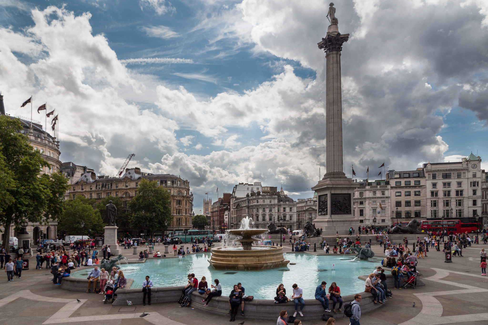
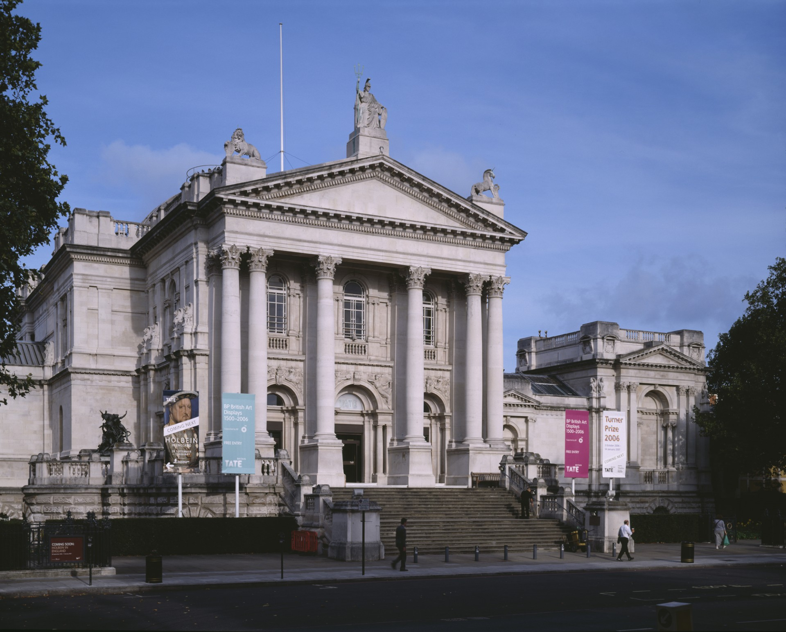

Il est possible que le tourisme en Angleterre remonte à l'époque médiévale et ses pèlerinages. Bien que les pèlerinages étaient entrepris pour des raisons religieuses, les pèlerins voyaient clairement en ces expériences une échappatoire à leur vie quotidienne. Les pèlerins étaient responsables lorsqu'ils ramenaient des reliques et des souvenirs de leurs voyages aux sanctuaires. Ils ont été parmi les premiers à reconnaître les avantages d'obtenir un crédit auprès de banques étrangères et se sont vite rendus compte que le transport à bas prix pouvait être obtenu autrement sur les navires commerciaux (des navires de vin anglais à destination de Vigo ont été utilisés par les pèlerins du Moyen Âge en direction de Saint-Jacques-de-Compostelle en Espagne).
Au cours du xviiie siècle en Angleterre, il devint à la mode d'entreprendre "Le Grand Tour", une longue tournée de l'Europe qui était perçue comme une expérience essentielle éducative et culturelle et de nombreuses familles aisées envoyaient leurs enfants afin de voir les sites majeurs des plus grandes villes d'Europe telles que Paris, Rome, Barcelone... Leurs expériences sont repris aujourd'hui par les hordes de routards d'étudiants désireux de connaître davantage le monde.
Le 5 juillet 1841, Thomas Cook qui est considéré aujourd'hui comme le fondateur du tourisme de masse moderne, organisa le premier voyage à forfait de l'histoire. Il mit en place pour l'entreprise ferroviaire anglaise Midland Counties Railway le paiement d'un shilling par personne pour un groupe de 570 militants anti-alcooliques de Leicester qui devait se rendre à un rassemblement à Loughborough. Cette prestation incluait le ticket de train ainsi que la nourriture. Thomas reçut en contrepartie une partie du prix facturé aux passagers. Par la suite, il organisa dans le cadre de l'Exposition universelle de 1851 des packages qui comprenaient l'hébergement, et devint au fil du temps le pionnier des vacances à forfait en Grande-Bretagne (en particulier en Écosse) et sur le continent européen (Paris et les Alpes étaient les destinations les plus populaires). À la fin de l'époque victorienne, l'industrie du tourisme se développa rapidement; initialement, l'activité était soutenue par les classes moyennes en pleine croissance, qui avaient du temps libre et qui pouvaient se permettre le luxe de voyager et même de rester dans des pensions un certain laps de temps. Le Bank Holiday Act de 1871 inséra un droit légal pour les travailleurs à prendre des vacances, même si à l'époque celles-ci n'étaient pas payées.
En Grande-Bretagne, la tradition des vacances de la classe ouvrière s'est fermement établie durant le dernier quart du xixe siècle, avec une large concentration sur les stations balnéaires. D'autre part, l'expansion du réseau de chemin de fer à la même époque a entraîné la croissance des villes balnéaires de Grande-Bretagne, en leur apportant la population des centres urbains de l'Angleterre située non loin. Ainsi, Blackpool a été créé par la construction d'une ligne à Fleetwood, et certaines stations ont été promues par les entreprises ferroviaires elles-mêmes, Morecambe par le chemin de fer Midland Counties Railway et Cleethorpes par le Great Central Railway. Blackpool est rapidement devenue l'une des destinations britanniques les plus touristiques, mais ce n'est pas sans ses désastres. En 1897, la tour de Blackpool prit feu et l'une des premières photographies de la ville montra d'énormes quantités de fumée qui s'échappait de la plus grande attraction touristique du nord de l'Angleterre.
Les campings ont commencé à apparaître dans les années 1930, mais ce phénomène prit réellement son essor dans l'après-guerre. Les sociétés anglaises Butlins et Pontins créèrent la tendance, mais la popularité de leur logement spartiate diminua avec l'augmentation des voyages à forfait à l'étranger et l'augmentation du niveau de confort exigé par les visiteurs. Vers la fin du xxe siècle, le marché du camp de vacances a été relancé avec succès par les centres de villégiature haut de gamme situés à l'intérieur des terres et appartenant à la société néerlandaise Center Parcs.
Trafalgar Square, 15 000 000 visiteurs
British Museum, 5 900 000 visiteurs
Pleasure Beach, Blackpool, 5 700 000 visiteurs
Tate Modern, 4 900 000 visiteurs
National Gallery, 4 600 000 visiteurs
Natural History Museum, 3 700 000 visiteurs
The London Eye, 3 500 000 visiteurs
Science Museum, 2 700 000 visiteurs
Victoria & Albert Museum, 2 100 000 visiteurs
Tour de Londres, 2 170 000 visiteurs
Victoria and Albert Museum, 2 100 000 visiteurs
National Maritime Museum, 2 100 000 visiteurs
National Portrait Gallery, 1 900 000 visiteurs
Cathédrale Saint-Paul de Londres, 1 700 000 visiteurs
Tate Britain, 1 700 000 visiteurs
National Portrait Gallery, 1 640 000 visiteurs
Abbaye de Westminster, 1 500 000 visiteurs
Zoo de Chester, 1 400 000 visiteurs
Kew Gardens, 1 400 000 visiteurs
British Library, 1 300 000 visiteurs
Eden Project, 1 100 000 visiteurs
Tate Liverpool, 1 100 000 visiteurs
Zoo de Londres, 1 100 000 visiteurs